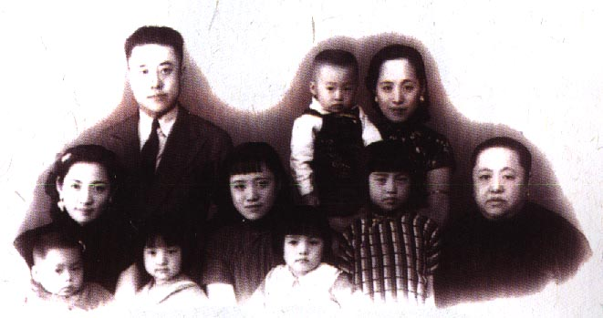

0
条事件
-
时间跨度
0
主线书目
年表
正在载入
增量原则
先以《李敖自传与回忆》建立骨架，只收可以追到具体日期的条目。后续每处理一本书，就追加事件、保留出处、更新日志；不把163本书一次性混读成一锅粥。

1935-2018
本项目由 涛子、行动创造本质、我想我是海、Z、higher sky、2046、红红的红夹克、章俊彦、火日立一个字、放翁、*夏、只拣儿童多处行、王利杰 赞助
从日子进入一生：出生、流亡、求学、文星、软禁、入狱、复出，以及每一次留下文字火花的现场。
图：Wikimedia Commons，Li Ao 1939.jpg
正在载入
先以《李敖自传与回忆》建立骨架，只收可以追到具体日期的条目。后续每处理一本书，就追加事件、保留出处、更新日志；不把163本书一次性混读成一锅粥。